AWS WAF
Sécurité Cloud · Protection applicative d'une ALB avec AWS WAF · Règles managées, tests d'attaques & analyse de logs
Ce lab consiste à protéger une application web exposée derrière un Application Load Balancer (ALB) à l'aide d'AWS WAF (Web Application Firewall). Une Web ACL est configurée avec deux jeux de règles managées par AWS — AWSManagedRulesCommonRuleSet et AWSManagedRulesSQLiRuleSet — puis validée par l'envoi de trois familles d'attaques web courantes (injection SQL, XSS, path traversal) directement dans l'URL. L'objectif est double : vérifier que le WAF bloque effectivement ces requêtes malveillantes, et savoir lire les logs CloudWatch pour identifier précisément quelle règle a déclenché le blocage et pourquoi.
Environnement
Web ACL lab-s6-waf
Ressource protégée ALB lab-s6-alb
Règles managées CommonRuleSet, SQLiRuleSet
Action par défaut Allow
Logs CloudWatch Logs Insights
Région eu-west-1 (Irlande)
Mise en Place — Infrastructure ALB
Ce lab réutilise le VPC lab-s6-vpc mis en place précédemment (2 subnets dédiés + les subnets du VPC par défaut). Un Application Load Balancer internet-facing est créé sur les subnets publics, avec un target group pointant vers l'instance EC2 web-server déjà provisionnée (Apache) sur le port 80.
Subnets disponibles
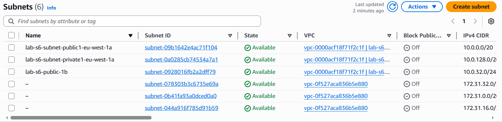
Target Group — Enregistrement de l'instance
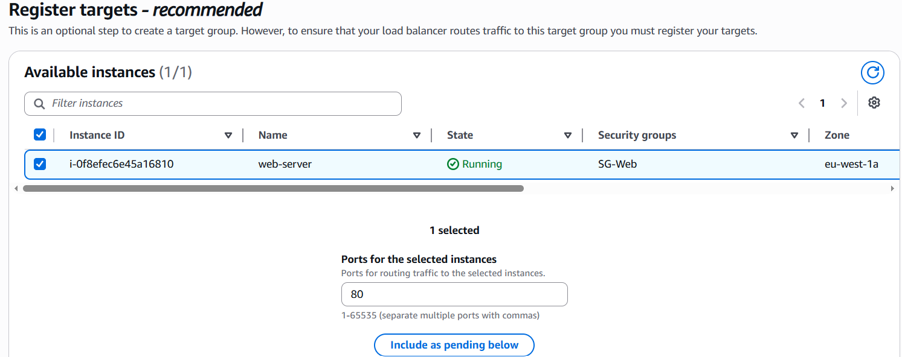
Load Balancer actif
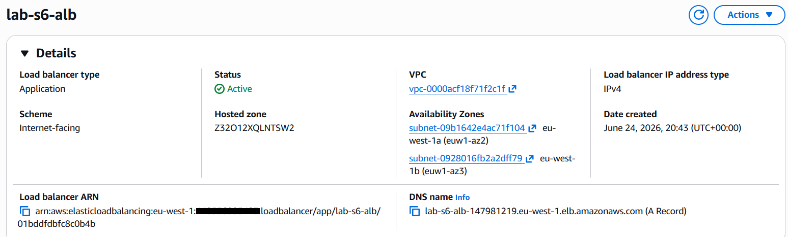
| Nom | lab-s6-alb |
| Type | Application Load Balancer |
| Scheme | Internet-facing |
| Statut | ✔ Active |
| DNS name | lab-s6-alb-147981219.eu-west-1.elb.amazonaws.com |
| Availability Zones | eu-west-1a (euw1-az2), eu-west-1b (euw1-az3) |
Test avant activation du WAF
Avant d'attacher la Web ACL, l'ALB est testé seul : la page Apache s'affiche correctement, confirmant que le routage et les Security Groups fonctionnent en amont de toute protection applicative.
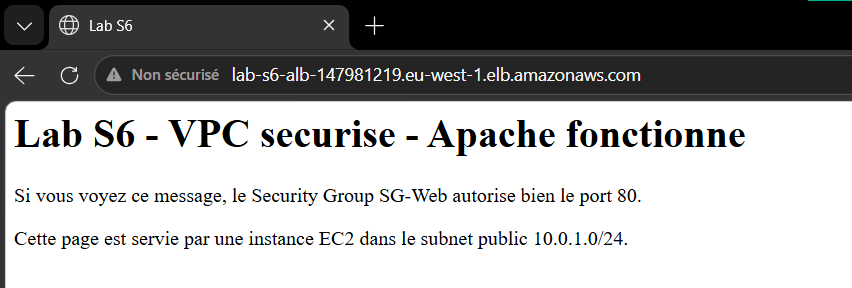
Configuration de la Web ACL
La Web ACL lab-s6-waf est créée et associée à l'ALB. Trois groupes de règles managées gratuites d'AWS sont ajoutés, couvrant les vulnérabilités web les plus courantes :
Sélection des groupes de règles managées
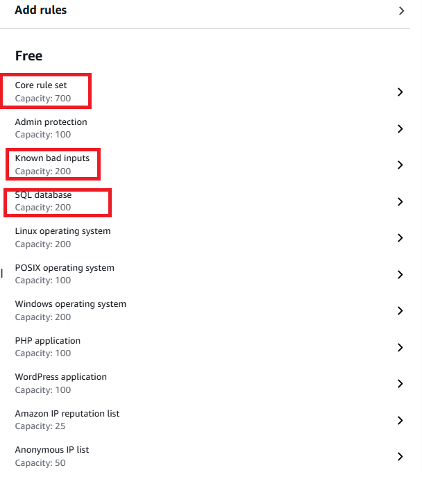
| Groupe de règles | Capacité (WCU) | Protège contre |
|---|---|---|
| Core rule set (Common) | 700 | XSS, protocoles HTTP invalides, LFI/path traversal, requêtes malformées |
| Known bad inputs | 200 | Motifs associés à des exploits connus (headers/payloads suspects) |
| SQL database | 200 | Injection SQL |
Ordre de priorité des règles
Les règles sont évaluées dans l'ordre affiché — la première règle qui matche et qui est "terminating" détermine l'action finale :
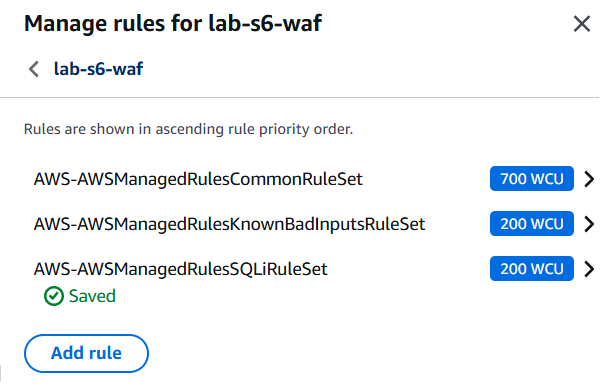
Journalisation — CloudWatch Logs
La journalisation est activée vers un groupe de logs CloudWatch dédié (aws-waf-logs-lab-s6...), indispensable pour analyser a posteriori les requêtes bloquées et comprendre quelle règle a réagi.
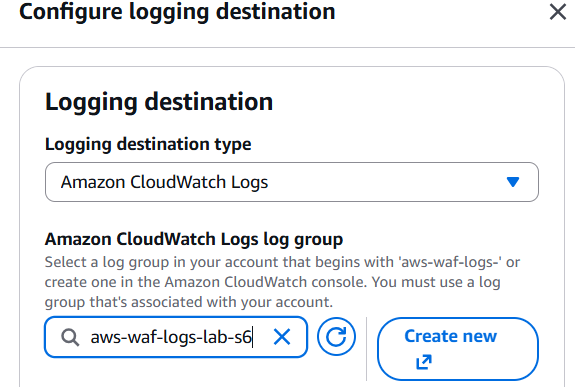
Validation du trafic légitime
Une fois le WAF activé, le trafic légitime continue de passer sans encombre — la page Apache reste accessible normalement, preuve que les règles ne génèrent pas de faux positif sur une navigation standard.
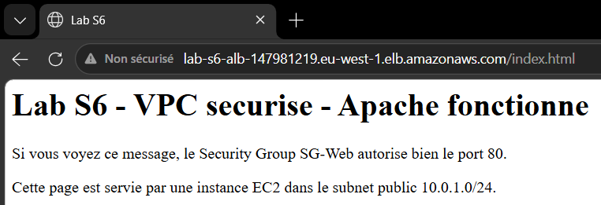
Architecture de Protection
Le WAF est attaché directement à l'ALB. Chaque requête HTTP entrante est évaluée séquentiellement par les jeux de règles de la Web ACL avant même d'atteindre l'application : dès qu'une règle "terminating" matche, la requête est bloquée (403) et l'évaluation s'arrête — sinon elle continue jusqu'à l'action par défaut.
| Web ACL | lab-s6-waf |
| ARN | arn:aws:wafv2:eu-west-1:xxxxxxxxxxxx:regional/webacl/lab-s6-waf/471c29ab-3b7e-4e1e-afb8-bcd11f38242a |
| Ressource associée | ALB lab-s6-alb-147981219.eu-west-1.elb.amazonaws.com |
| Ordre d'évaluation | CommonRuleSet → KnownBadInputsRuleSet → SQLiRuleSet → Default action |
| Type de règles | Groupes de règles managés AWS (MANAGED_RULE_GROUP) |
Vue d'ensemble de l'activité — Protection Pack
La console AWS WAF fournit une visualisation Sankey de l'activité de la Web ACL, montrant comment le trafic se répartit à travers les règles jusqu'à l'action finale. On observe que tout le trafic passe d'abord par CommonRuleSet, puis ce qui n'a pas été bloqué continue vers SQLiRuleSet ; chaque groupe de règles retire une partie du trafic vers "Blocked", et ce qui reste ressort finalement en "Allowed" via l'action par défaut.
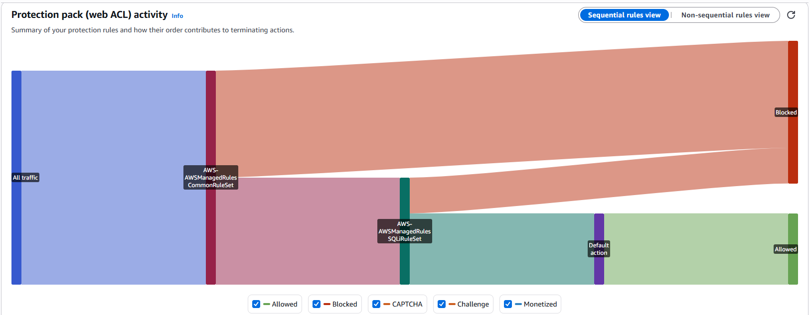
Tests d'Attaques Simulées
Trois payloads représentatifs de l'OWASP Top 10 ont été envoyés directement dans l'URL de l'application pour valider le comportement du WAF en conditions réelles.
1. Injection SQL — Contournement d'authentification
Requête : /login?user=admin%27--&pass=test — payload classique de bypass d'authentification (admin'-- commente la suite de la requête SQL côté serveur).
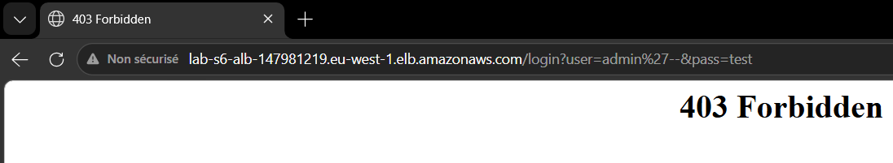
2. Cross-Site Scripting (XSS)
Requête : /search?q=<script>alert('XSS')</script> — injection d'un script dans un paramètre de recherche réfléchi.
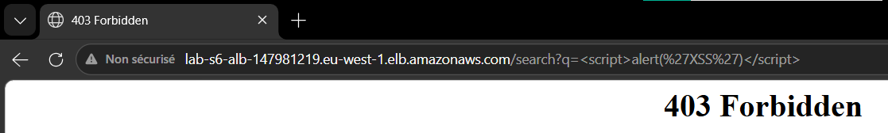
3. Path Traversal (LFI)
Requête : /file?path=../../etc/passwd — tentative de remontée d'arborescence pour lire un fichier système sensible.
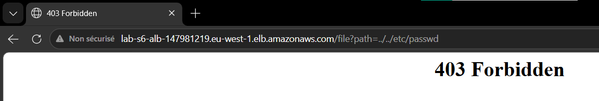
Résultat : les trois requêtes retournent un 403 Forbidden — la page d'erreur générique de la Web ACL, renvoyée avant même que la requête n'atteigne l'ALB ou l'application backend.
Analyse des Logs — CloudWatch Logs Insights
Un 403 seul ne suffit pas à comprendre pourquoi une requête a été bloquée : il faut remonter aux logs WAF envoyés vers CloudWatch. Le tableau de résultats confirme les trois blocages, chacun avec son terminatingRuleId propre :
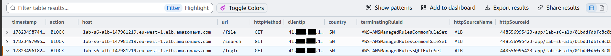
| URI | Action | terminatingRuleId |
|---|---|---|
/login | BLOCK | AWS-AWSManagedRulesSQLiRuleSet |
/search | BLOCK | AWS-AWSManagedRulesCommonRuleSet |
/file | BLOCK | AWS-AWSManagedRulesCommonRuleSet |
Détail du blocage SQLi
En développant l'entrée correspondant à /login, le log JSON expose précisément la logique de détection : le type de condition, l'emplacement du payload dans la requête, et les fragments exacts ayant déclenché la règle.
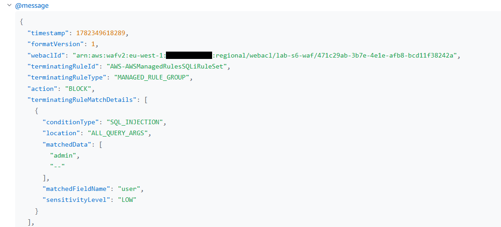
| terminatingRuleId | AWS-AWSManagedRulesSQLiRuleSet |
| terminatingRuleType | MANAGED_RULE_GROUP |
| action | BLOCK |
| conditionType | SQL_INJECTION |
| location | ALL_QUERY_ARGS |
| matchedFieldName | user |
| matchedData | admin, -- |
| sensitivityLevel | LOW |
Requête HTTP complète (httpRequest)
Le log conserve aussi l'intégralité du contexte de la requête bloquée : IP source, pays d'origine, en-têtes HTTP et User-Agent — utile pour la corrélation avec d'autres outils de détection (SIEM, threat intel).
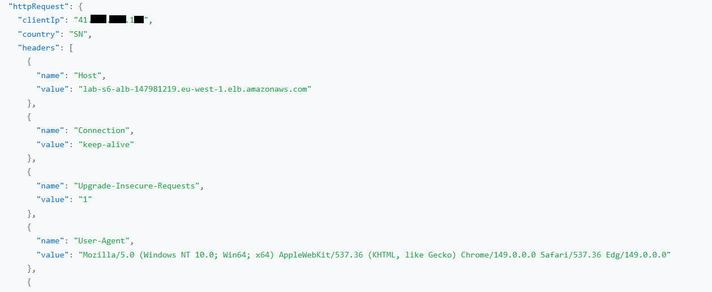
URI, arguments et labels appliqués
AWS WAF attache également des labels à la requête évaluée (ex. awswaf:managed:aws:sql-database:SQLi_QueryArguments), permettant de tracer précisément quelle signature de la règle managée a matché — utile pour affiner des règles personnalisées ou des exceptions par la suite.
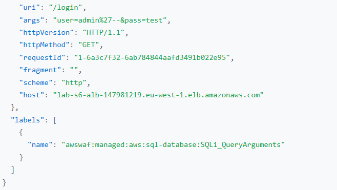
Conclusion : les trois payloads (SQLi, XSS, path traversal) ont été bloqués avant d'atteindre l'application, confirmant l'efficacité des règles managées AWS pour les vecteurs d'attaque les plus courants du Top 10 OWASP. L'analyse des logs CloudWatch permet d'aller au-delà du simple code 403 : elle identifie la règle exacte, le paramètre visé et les données ayant déclenché la détection — des éléments essentiels pour justifier une configuration de sécurité ou investiguer un futur faux positif.